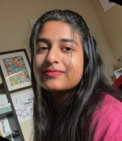

Hannah Fletcher
Hannah is a rising in the AICE program at Mandarin High School. She participates in
multiple clubs
outside of school and currently serves as co-president of Pride Club.
Every Thursday, Hannah
participates in a program called Little Language Learners,
through which she teaches American
Sign Language to first graders. Hannah was a proud
recipient of a Regional Award for NCWIT in
both 2020 and 2021. She earned a one-week
Women in Technology internship with Citi Bank
which she participated in over the
Summer in 2020. And returned in 2021 for a six-week internship.
Hannah's future
plans include going to university to major in Computer Science. Her current top
choices for schools are the University of Florida or Georgia Tech University.
Zaina Khan
Zaina is going to be attending USF in the fall at the Tampa campus.
They spend most of
their time at the gym training for weightlifting competitions.
They have two cats and
love spending time with them. They’re also in a punk
band called MILK where they play
the keyboard.
Afrah Rahman
Afrah worked on the Dallas pages, this is her first summer at Citi. Afrah is a Freshman
at the
University of Texas at Dallas and she will be majoring in Business Administration.
She
hopes everyone gets a chance to visit Dallas and visit some of the cool spots in town.
Amita Satish
Amita is a rising senior in high school who plans to major in engineering
and computer
science in college. She is the president of National Technical
Honor Society, vice
president of AI Club, national qualifier in TSA, and a
board member of WeEMBRACE, a
nonprofit organization that aims to bring
inclusion to our community and serves over 500
families. In addition, she is
very passionate about finance, and through participating in
the Wharton
Investment Competition along with her team, they placed in the top 15 in the
world. In addition to her passion in finance, technology, and inclusion in the
community,
she is a huge advocate for pancreatitis, having been personally affected
by it as well,
and hopes to bring more awareness for research.